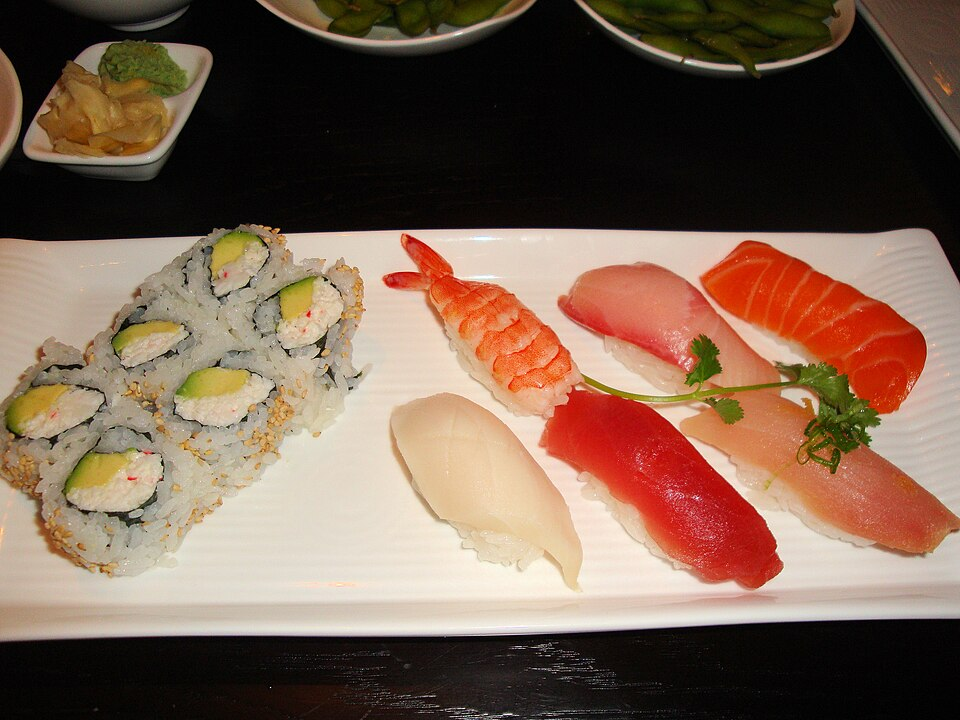

Dining Hours
- Tuesday – Thursday: 11:30 AM – 2:30 PM • 5:00 PM – 9:30 PM
- Friday: 11:30 AM – 2:30 PM • 5:00 PM – 10:30 PM
- Saturday: 12:00 PM – 10:30 PM (All Day)
- Sunday: 12:00 PM – 9:00 PM (All Day)
- Monday: Closed
Located in the vibrant Wilmore district bordering South End, YUME Ramen Sushi & Bar offers an intimate sushi counter, interactive ramen bar seating, and a spacious dining room. We look forward to welcoming you for lunch, dinner, or weekend drinks.

Address:
1508 S Mint St
Charlotte, NC 28203
Wilmore / South End Corridor
Phone: (980) 859-4599
Walk-Ins: Walk-ins are always welcomed at our ramen counter and sushi bar on a first-come basis.
Dining Room: Table seating available for small and large parties.
Visiting YUME in South End / Wilmore is convenient:
